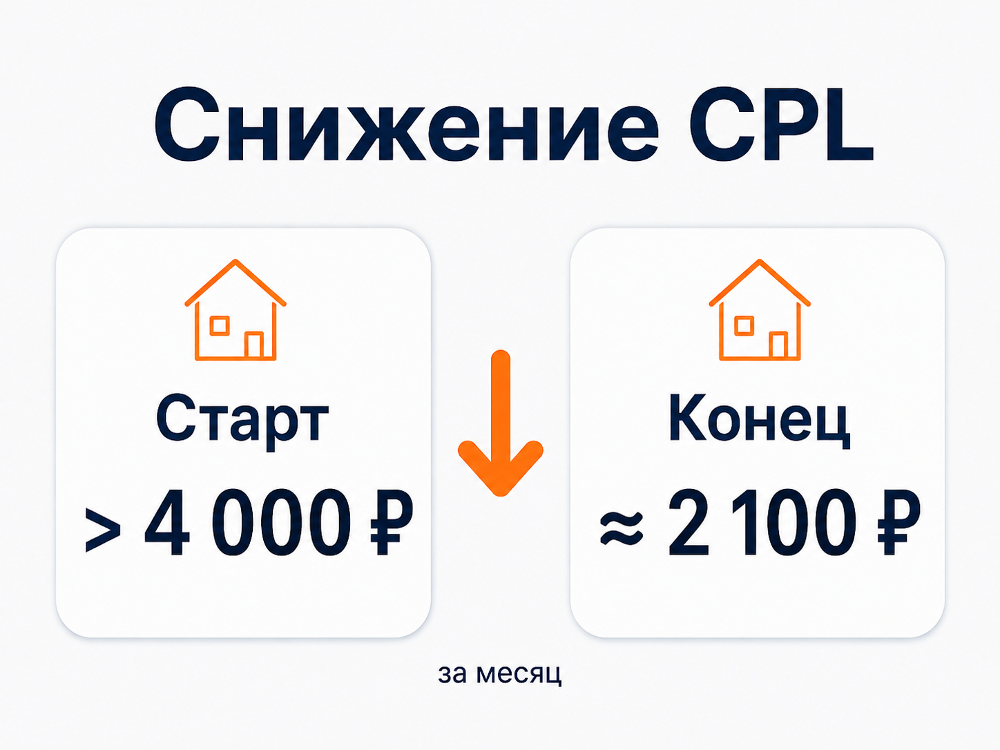

Блог о платном трафике
Реклама строительной компании: как получать целевые заявки
Реклама строительной компании должна приводить не максимальное количество обращений, а потенциальных заказчиков, которые подходят по типу объекта, бюджету, региону и срокам строительства. В этой нише легко получить дешевые заявки от людей, которые только изучают цены, хотят бесплатный расчет или пока вообще не готовы начинать стройку.
Поэтому я рассматриваю продвижение строительных услуг как связку: спрос -> реклама -> посадочная страница -> заявка -> квалификация -> смета или встреча -> договор. Если оценивать только клики и заполненные формы, картина будет неполной.
Где рекламировать строительную компанию
Набор каналов зависит от направления бизнеса. Строительство частных домов, фундаменты, кровельные работы, ремонт квартир и строительство коммерческих объектов требуют разной рекламы.
Для компаний, которые работают с уже сформированным спросом, одним из основных каналов остается Яндекс Директ. Человек сам ищет подрядчика, сравнивает технологии, проекты, стоимость и условия строительства.
Дополнительно могут использоваться:
- SEO для получения поискового трафика в долгосрочной перспективе;
- Яндекс Карты для локального спроса;
- Авито для отдельных строительных услуг и частного строительства;
- ретаргетинг для возврата посетителей сайта;
- контент и социальные сети для формирования доверия и повторных контактов с потенциальным клиентом.
Я бы не запускал все каналы одновременно без понимания экономики. Сначала нужно определить, где находится наиболее подходящая аудитория и сколько бизнес может платить за реального потенциального заказчика.
Яндекс Директ для строительной компании
В строительстве Яндекс Директ хорошо подходит для перехвата существующего спроса. Пользователь уже ищет, например, дом из газобетона, каркасный дом, строительство коттеджа под ключ или конкретный вид строительных работ.
В актуальном Яндекс Директе Единая перфоманс-кампания позволяет управлять размещением на Поиске, в Рекламной сети Яндекса и Картах. При необходимости эти места показа можно настраивать раздельно.
При этом я бы не смешивал разные направления бизнеса в одну общую рекламную сущность только ради упрощения аккаунта.
Пользователь, который ищет строительство дома под ключ, отличается от человека, которому нужен фундамент. Запрос «проект дома 120 м²» также выражает другой уровень готовности, чем «заказать строительство дома».
Сегментация позволяет точнее сопоставлять запрос, объявление и страницу, на которую попадает потенциальный клиент.
Поисковая реклама
Поиск работает с уже выраженным намерением.
В строительной тематике можно выделять запросы по:
- типу объекта;
- технологии строительства;
- площади;
- конкретной услуге;
- формату «под ключ»;
- стоимости;
- проектам домов;
- региону строительства.
Отдельно нужно следить за информационным трафиком. Запросы со словами «своими руками», «инструкция», «чертеж бесплатно» или запросы на покупку отдельных материалов могут расходовать бюджет, хотя человек вообще не планирует заказывать услуги подрядчика.
Но работать только по небольшому списку очевидных коммерческих фраз тоже неправильно. Нужно смотреть реальные поисковые запросы и постепенно корректировать структуру по статистике.
Реклама в РСЯ
РСЯ позволяет работать с пользователями за пределами самого поиска. Для строительства это особенно полезно из-за длинного периода выбора подрядчика.
Человек может несколько раз посетить сайты строительных компаний, посмотреть проекты, вернуться к расчетам через несколько недель и только потом оставить заявку.
В РСЯ результат сильно зависит от:
- выбранных аудиторий;
- качества креативов;
- предложения;
- посадочной страницы;
- корректных целей;
- качества площадок и фактического трафика.
Поэтому я оцениваю РСЯ отдельно от Поиска и не сравниваю каналы только по стоимости клика.
Как разделять рекламные кампании
Структуру лучше строить вокруг реального бизнеса.
Если компания одновременно предлагает дома из газобетона, каркасные дома, фундаменты и реконструкцию, человеку желательно сразу показывать предложение по той услуге, которую он ищет.
Разделение может идти по нескольким признакам:
- направление: строительство домов, фундаменты, реконструкция;
- технология: газобетон, кирпич, каркас;
- география: разные города или районы работы;
- намерение: строительство под ключ, проекты, расчет стоимости;
- тип трафика: Поиск, РСЯ, ретаргетинг.
При этом чрезмерно дробить рекламу тоже не нужно. Современным алгоритмам нужны данные для оптимизации, поэтому структура должна помогать управлению, а не превращать аккаунт в десятки почти одинаковых кампаний.
Что должно быть на сайте строительной компании
Даже качественно настроенная реклама не компенсирует слабую посадочную страницу.
Для строительной тематики человеку нужно быстро понять:
- что именно строит компания;
- в каких регионах работает;
- какие технологии использует;
- какие объекты уже построены;
- как выглядят реальные работы;
- от чего зависит стоимость;
- какие этапы входят в работу;
- как получить расчет или консультацию.
Особенно полезны реальные фотографии завершенных и строящихся объектов. Они дают больше информации о подрядчике, чем универсальные изображения красивых домов из фотобанков.
Если направлений несколько, я предпочитаю делать отдельные смысловые страницы или блоки под основные услуги. Не стоит вести человека, который ищет дом из газобетона, на страницу, где вперемешку продаются ремонт квартир, кровля, бани, заборы и фундаменты.
Форма заявки тоже должна соответствовать этапу выбора. Для части аудитории предложение «получить расчет стоимости» будет понятнее, чем абстрактное «оставьте заявку».
Оффер в рекламе строительных услуг
Само сообщение «Строим дома качественно» почти ничего не объясняет.
Оффер должен помогать человеку понять, подходит ли ему компания.
В объявлении и на странице можно раскрывать:
- тип строительства;
- технологию;
- географию работы;
- реальные проекты;
- комплектацию;
- возможность расчета стоимости;
- сроки, если компания действительно может их гарантировать;
- особенности проекта или процесса работы.
Не нужно добавлять преимущества, которые невозможно подтвердить. Для дорогой услуги доверие обычно важнее количества рекламных обещаний.
Реальный кейс: реклама строительства домов
У меня есть отдельный кейс по рекламе строительства домов:
https://naklikay.ru/cases/house-construction-yandex-direct/
Продвигалось строительство частных домов из керамического блока Porotherm. В работе использовались Поиск и РСЯ.
В первую неделю после запуска стоимость заявки превышала 4 000 ₽. К концу месяца ее удалось снизить примерно до 2 100 ₽. Реклама при этом работала параллельно с кампаниями самого заказчика, а основная часть обращений поступала из настроенных мной кампаний.
Для меня этот пример показателен тем, что результат после запуска нельзя оценивать по нескольким первым дням. Нужно накопить статистику, понять, какие запросы и аудитории дают обращения, убрать слабый трафик и постепенно перераспределять бюджет.
Данных по фактическим продажам и ROMI от заказчика в этом проекте не было, поэтому я не привязываю результаты кейса к выручке и оцениваю только подтвержденные рекламные показатели.

Почему дешевой заявки недостаточно
В строительстве одна из главных ошибок - оптимизация только по отправке формы.
Представим две кампании.
Первая дает 30 заявок дешевле, но большинство людей не подходят по бюджету или не планируют начинать строительство.
Вторая дает 15 обращений дороже, зато значительная часть клиентов переходит к расчету, встрече или смете.
Для бизнеса второй вариант может оказаться намного выгоднее.
Поэтому в отчетности желательно видеть хотя бы несколько этапов:
- Заявка.
- Целевой или квалифицированный лид.
- Расчет или смета.
- Встреча.
- Договор.
Если CRM позволяет передавать информацию о дальнейшей судьбе заявки, ее можно связывать с рекламой. Яндекс Метрика поддерживает загрузку офлайн-конверсий и данных из CRM, а привязанные конверсии могут использоваться при анализе и оптимизации кампаний.
Это особенно полезно в нишах, где между первым обращением и договором проходит заметное время.
Пример из смежной ниши: качество лида важнее количества
Та же логика хорошо видна в моем кейсе по коммерческой недвижимости ЖК «Ватутинки Парк»:
https://naklikay.ru/cases/vatutinki-park-commercial-real-estate-yandex-direct/
На одном из этапов проекта было получено 7 обращений примерно по 6 000 ₽. После дальнейшей оптимизации результат вырос до 26 лидов со средней стоимостью около 1 700 ₽.
При этом отдельно оценивалось качество обращений. В одном из периодов 10 из 12 заявок оказались квалифицированными.
Строительство и недвижимость нельзя считать одной нишей, но у них есть общая особенность: дорогой продукт и длительное принятие решения. Поэтому ориентир на количество форм без обратной связи от отдела продаж легко приводит к неправильным выводам о рекламе.
Как считать рекламный бюджет
Универсального бюджета для строительной компании нет.
На расходы влияют:
- регион;
- конкуренция;
- конкретная строительная услуга;
- объем спроса;
- стоимость трафика;
- конверсия сайта;
- допустимая цена целевого обращения;
- необходимое количество заявок.
Я предпочитаю идти от экономики.
Если компания знает, сколько может платить за квалифицированный лид и сколько таких обращений ей требуется, появляется нормальный ориентир для бюджета.
Допустимая стоимость целевой заявки × необходимое количество заявок = ориентир рекламного бюджета.
Дальше эту модель нужно сравнивать с реальными результатами после запуска.
Подробнее - в статье «Стоимость контекстной рекламы».
Как понять, что реклама работает плохо
Проблема не всегда находится внутри Яндекс Директа.
Я бы проверял всю цепочку.
Если кликов много, а заявок мало - смотрим соответствие трафика и посадочной страницы.
Если заявок достаточно, но они нецелевые - проверяем запросы, аудитории, формы и оптимизацию.
Если лиды качественные, но договоров мало - нужно смотреть обработку обращений, скорость ответа, дальнейшие касания и работу отдела продаж.
Если результат постепенно ухудшился - анализируем спрос, изменения кампаний, конкуренцию, поисковые запросы, площадки, сайт и накопленную статистику.
Подробнее - в статье «Аудит Яндекс Директ».
Частые ошибки в рекламе строительной компании
Продвигать все услуги одним предложением
Чем шире предложение, тем сложнее человеку понять, почему ему нужно обратиться именно в эту компанию.
Смотреть только на CPL
Дешевый лид может оказаться бесполезным. Для строительного бизнеса гораздо интереснее стоимость квалифицированной заявки и дальнейших этапов воронки.
Запускать рекламу без нормальной аналитики
Если часть форм, звонков или обращений теряется, статистика становится ненадежной.
Делать выводы слишком быстро
Несколько заявок после запуска еще не показывают реальную эффективность направления.
Не передавать специалисту информацию о качестве обращений
Без обратной связи из CRM рекламный специалист видит заявку, но не всегда знает, что произошло после нее. В результате алгоритмы и рекламные решения могут оптимизироваться под количество форм, а не под потенциальных клиентов.
FAQ
Какая реклама лучше всего подходит строительной компании?
Если люди уже активно ищут конкретную строительную услугу, я в первую очередь рассматриваю Яндекс Директ. Дополнительно могут использоваться SEO, Карты, Авито, ретаргетинг и другие каналы в зависимости от продукта и аудитории.
Что лучше для строительства - Поиск или РСЯ?
Они решают разные задачи. Поиск работает с выраженным запросом пользователя. РСЯ помогает находить и возвращать аудиторию за пределами поисковой выдачи. На практике я оцениваю каждый источник по стоимости и качеству обращений.
Сколько стоит заявка на строительство дома?
Единой нормальной цены нет. Она зависит от региона, технологии строительства, предложения, сезона, сайта, конкуренции и требований к самому лиду. Сравнивать свою рекламу со случайной средней цифрой по рынку я бы не стал.
Нужен ли отдельный сайт под рекламу строительной компании?
Не обязательно создавать новый сайт только ради Директа. Но посадочная страница должна точно отвечать на запрос пользователя. Если на одном сайте собраны совершенно разные услуги, основные рекламные направления лучше разводить по отдельным страницам или полноценным смысловым разделам.
Что считать хорошим результатом рекламы?
Показатель нужно связывать с бизнесом. Для одного проекта достаточно считать стоимость целевой заявки. Для другого нужны квалифицированные лиды, сметы, встречи и подписанные договоры. Чем дороже и длиннее сделка, тем полезнее анализировать рекламу глубже обычного CPL.
Итог
Реклама строительной компании работает лучше, когда рекламные кампании связаны с конкретными услугами, посадочными страницами и реальными данными о качестве заявок.
Яндекс Директ позволяет получать спрос уже на этапе поиска подрядчика, а РСЯ и повторные касания помогают работать с аудиторией, которая еще выбирает. Но окончательный результат зависит от всей связки: предложения, сайта, аналитики, рекламы и обработки обращения.
Поэтому при продвижении строительных услуг я смотрю дальше рекламного кабинета и оцениваю, какой трафик в итоге приводит к потенциальным заказчикам.